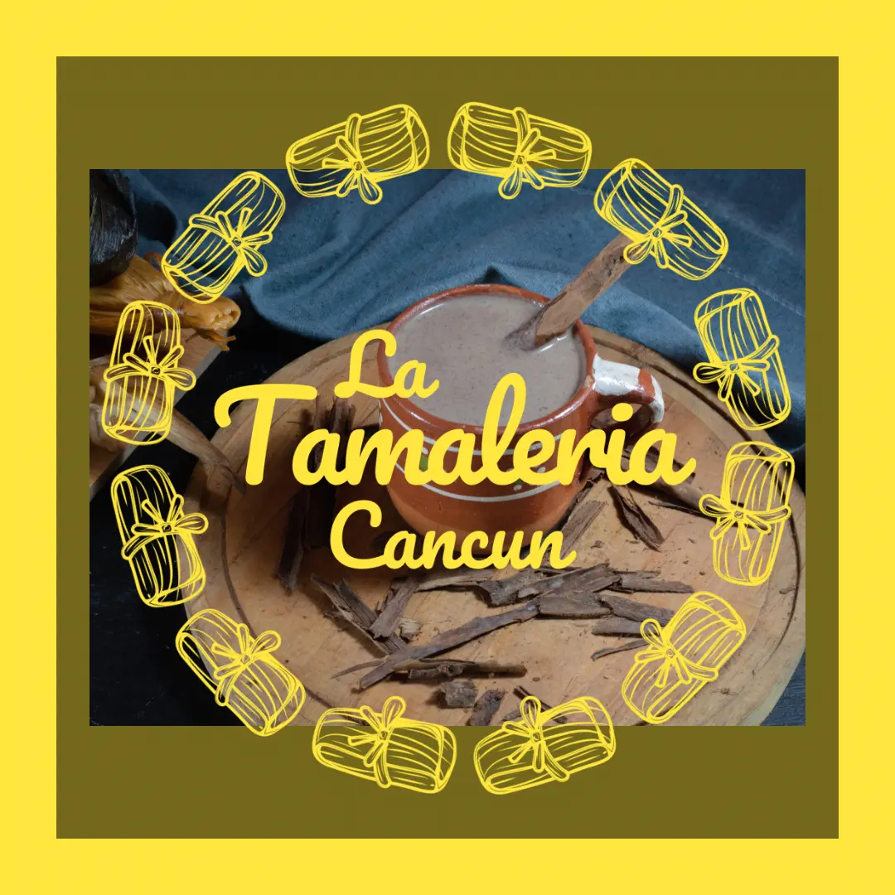

La Historia del Atole en México
El atole es una bebida tradicional mexicana que tiene sus raíces en la época prehispánica. Elaborado principalmente a base de maíz, este delicioso brebaje se ha mantenido como un símbolo de la cultura mexicana durante siglos. A lo largo de los años, el atole ha evolucionado, adaptándose a diferentes regiones y celebraciones del país.
Desde su consumo en las antiguas civilizaciones, el atole ha sido parte fundamental de las festividades mexicanas, especialmente durante el Día de Muertos y las celebraciones navideñas. Además de su sabor delicioso y reconfortante, el atole posee un importante valor histórico y cultural para los mexicanos.
En la actualidad, el atole sigue siendo una bebida popular, con diversas variantes que incluyen sabores como fresa, chocolate, vainilla y muchos más, adaptándose a los gustos y preferencias de cada región. Sin lugar a dudas, el atole es una bebida que ha trascendido generaciones y sigue siendo un emblema de la tradición culinaria mexicana.